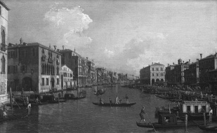

VII
Tarihî Süreç İçerisinde Avrupa ile İktisadî Bütünleşme Sorunu
Başlangıcından 19. Asra Kadar
Osmanlı iktisadî tarihi, tarihî süreç içinde Avrupa ile iktisadî bütünleşme sorununu kapsar. Başka bir adı da yoktur zaten, çünkü son üç asrın iktisadî tarihine bir başlık koysak, bundan daha uygunu olamaz. İmparatorluğun son üç asırda Avrupa’dan başka bütünleşeceği, iktisadî bakımdan cebelleşeceği, buna mümasil siyasî, idarî değişiklikler geçireceği başka bir kuvvet de yoktur. Bu çok açıktır, çünkü Rönesans’tan itibaren artık dünya ekonomisi ve iktisadî yapısı Avrupa’dan yönlendirilmektedir; üretim bu kıtada yüksek seviyededir ve Osmanlı İmparatorluğu’nda da üretimin belirgin bir özelliği vardır ki; öyle zannedildiği gibi iktisadî bakımdan, yani sınaî ve ticarî bakımdan bazı müesseselerini ihmal etmiş bir imparatorluk görünümü değildir; bunun üzerinde daha çok durabiliriz.
Avrupa’da özellikle 18. ve 19. asırlarda bünye değişiklikleri vardır. Bütün mesele, özellikle 17. asırdan sonra, değişen Avrupa dünyasının iktisadî süreçlerine, yani üretim yapısına paralellik kuramamaktır. Aslında, imparatorluğun fabrika üretimi yok değil, burada mühendislik bilgisi yok değil, buradaki üretim organik enerjiden anorganik enerjiye hiç geçmemiş, gibisinden bir sorun söz konusu değildir. Şunu bilmeliyiz; Türkiye tarihinde mühendislik yetmiş yılda çıkmıyor, bu tip okul tarih bilgilerini çıkartmak lâzım hafızamızdan. Türkiye Cumhuriyeti tarihinde sosyal bilimlerde ilerleme vardır, ama bir toplum, mühendisliği yetmiş senede öğrenmez, bu mümkün değildir. Bu dalların hepsi ananesi olan mesleklerdir. Âdeta İngiliz çimi gibidir.53Bazı dalların memlekette tutunması en az iki asır ister. Eğer modern çağların gereklerine ayak uydurabilmiş bir ordu varsa, bu geleneği çok eski bir kurum olmasından ileri gelir. Onun üzerinde tartışılmaz. Hatta, bir memlekette bürokraside, meselâ evrakın kaybolmaması gibi –insanlar bunun farkında değiller, fakat Türkiye’de evrak kaybolmuyor– yazılan dilekçelere cevap verilmesi gibi –geç veya saçma cevap veriliyor olabilir, ama veriliyor– belirgin alışkanlıklar yerleşmişse, bunlar bürokrasinin de köklü bir geleneği olduğunu gösterir. Birleşmiş Milletler üyesi olan ülkelerin büyük çoğunluğunda böyle hukukî bir yapı ve kanun düzeni yoktur; şayet burada var ise, bir gelenek söz konusudur.
Şimdi şöyle bir gelişim üzerinde durmamız gerekiyor. 1848’de Avrupa’da Macaristan bağımsızlığını ilân etmiş ve demiş ki: “Bundan sonra Macaristan ayrı bir devlettir ve bir cumhuriyettir, Avusturya tacına bağlı değildir, resmî dilimiz de artık Latince değil, Macarcadır.” (Çünkü Avusturya idaresinde iken resmî dil olarak Almancayı değil, Latinceyi kullanıyorlardı.) Aynı dönem içinde komşu bir memlekette, Polonya’da da Rusya’ya karşı ayaklanma başlamıştır. Polonya Krallığı artık Rusya’nın bir parçası olmayacak diye Polonyalılarla Macarlar karşılıklı yardımlaşma içindedir, yani dünyanın artık enternasyonalist bir döneme girdiği görülüyor. Gerici politikalar diyeceğimiz, monarşistler ve ihtilâlleri istemeyen devletler bir işbirliği içindedir. Avusturya, Rusya ve Prusya arasında kurulan “mukaddes liga”yı hatırlayın ve bunlar âdeta ortak bir politika takip etmektedirler; yani Avrupa’nın herhangi bir yerindeki millî ayaklanmaya karşı birlikte hareket edeceğiz diyorlar. Bu yüzden meselâ, Avusturya ve Prusya, Yunan ayaklanmasını desteklememişlerdir ve Rusya Çarı I. Nikola Yunan ayaklanmasını destekleyenlerin arasına katıldığı zaman da Metternich tarafından kınanmış ve hamakatla suçlanmıştır ve Rusya gerçekten de hamakatının bedelini ödemiştir. Osmanlının hükmündeki Yunanlılar ayaklanırsa, herhalde onlardan iki-üç gömlek daha ötede bir sosyal bünyeye sahip, millî eğitiminin anahatları tamamlanmış, millî hayatın esasları kurulmuş, devlet tecrübesi ve geleneği olan Polonyalılarla Macarlar esarette oturacak değildi. Nitekim 1830 ve 1848 ayaklanmaları bunun bir sonucudur. 1849’da bunların hepsi Avusturya-Rusya kuvvetleri tarafından püskürtülmüştür, ama Avusturya bu kuvvetleri bastıramamıştır. Rusya’dan yardım istemiştir. Rus General Paskieviç bunların hepsini püskürtmüştür ve bütün ayaklanan milletlerden, Kuzey İtalyan, Polonya ve Macaristan birlikleri ancak bazı yerlere sığınabilmiştir. Bir kısmı İngiltere’ye, ama asıl büyük kitle kapı komşusu olan Osmanlı İmparatorluğu’na sığınmıştır. Osmanlı İmparatorluğu, Avrupa ile Avrupa’nın standartları içinde bir çatışmaya girmektedir. Rusya ve Avusturya “Mültecileri geri veriniz” diyor; Osmanlı “Hayır vermiyoruz” diyor. Bu “Vermiyoruz” tavrını Fransa ve İngiltere destekliyor, alkışlıyor. Gelen insanlar çok kısa zamanda bu vatana sığınıyorlar ve içlerinde çok önemli Polonyalı ve Macar albay ve generaller asıl adlarını değiştiriyor, din değiştiriyorlar. İşte meselâ, Konstantin Borcezski, “Mustafa Celaleddin” adını alıyor. Bu zat sonra paşa oluyor. Karadağ muharebesinde general rütbesi ile şehit düşüyor. Bunun torunu Nâzım Hikmet. Diğer biri, Albay Kolciezski “Sefer Paşa” oluyor; Çaykovski diye bir albay “Sadık Rıfat Paşa” oluyor. Osmanlı İmparatorluğu’nda Kazak alaylarını teşkil ediyor ve bu alayların askerleri Hıristiyan ve Müslüman olduğu için de alayın bayrağının üzerinde haçla hilâl yanyanadır. Hayatımız birdenbire değişmeye başlıyor. İstanbul’un kibar muhitlerinde kadınlı erkekli suareler, ziyaretler, münasebetler oluşuyor. Çünkü kaçan insanlar Müslüman olmuşlardır, ama tarz-ı hayatları itibariyle İstanbul’un Müslüman muhitindeki yaşamı benimsemeleri mümkün değildir ve kendi ülkelerindeki yaşamı buraya getirmişlerdir. Birdenbire Tanzimat reformları Boğaziçi sefalarında, korular ve kırlardaki pikniklerde ve gezintilerde, Beyoğlu’ndaki kitapçılarda kadın erkek sohbetleriyle, tiyatro ve musiki seanslarıyla bu yeni zümre aracılığıyla kendini hissettirmektedir. Yaşam değişmektedir, daha önemlisi 19. yüzyılda bir salon geleneği çıkmıştır. Bu Mısırlılarinkinden farklıdır. Bu salon geleneğinin başında birtakım hanımlar yer almaktadır. Bunlardan meselâ Şaire Nigâr Hanım, Macar Süleyman Paşa’nın kızıdır.
Bu önemli olay (mülteciler olayı), Osmanlı İmparatorluğu’nun ordularını, teknolojisini ve idare hayatını reforme etmeye yardımcı olmaktadır; artık maaşla tutulan eski maceraperest insanların yerine yenileri ortaya çıkmaktadır. Bu yeniler, kalben bu devlete ve millete bağlı olan insanlardır; yeni vatan ve yeni milletlerinin kuruculuğuna katılmaktadırlar. Sözünü ettiğim Mustafa Celaleddin Paşa, Les Turcs anciens et modernes (1869) adlı kitapta Türk milliyetçiliğini yeni bir bakışla ele almaktadır ve bu 19. yüzyılda çağdaş anlamda, ve söylemekte mahzur yok, etnik ırkçı anlamda bir Türk milliyetçiliğinin ilk el kitabıdır. Onun oğlu olan Ferik Enver Paşa da benzer eserler yazmıştır. Torunu Celile Hanım’dır, torununun oğlu da Nâzım Hikmet’tir. 1900 yılına geldiğimiz zaman İstanbul batılılaşan, Batı hayatına entegre bir üst sınıfa sahiptir.
Bu olayın öbür yanı üzerinde de durmak gerekir: Rusya ile başlayan gerginleşme, devleti 1853’te Sinop faciası dediğimiz, Amiral Nahimov’un baskınıyla filonun yok edilmesi olayına sürüklemiş ve 1853 Kasımı’nın otuzuncu günü cereyan eden bu olaydan sonra Devlet-i Aliyye, Rusya’ya harp ilân etmiştir. Mençikov’un tehditleri ve Sinop faciası üzerine İngiltere ve Fransa Osmanlı İmparatorluğu’nu destekledikleri için, Mart 1854’te onlar da Rusya’ya harp ilân etmişlerdir. Modernleşen Türk ordusu Silistre müdafaasını büyük başarıyla yürütmüştür (Namık Kemal’in Vatan yahut Silistre adlı piyesi bu olayı yansıtır). Yeniçeriliğin kaldırılmasından beri reformları tamamlayamayan ve Avrupa tarafından ilk anda küçümsenen Türk kıtaları, Kırım’ın Gözleve limanında karaya çıkarak şehri işgal ve fethetmişlerdir. 17 Şubat 1855’teki çıkarma ile, 1783 yılından beri Türk ordularının ilk defa kaybolan bu vatana adım atmalarıyla da şevk ve gayret gelmiş, İslâm dünyasında yeni bir Türkiye imajı ortaya çıkmıştır ve bu olay tabii Rusya’da çok büyük sarsıntılara neden olmuştur. Ardından, Şubat 1856’da müttefik kuvvetlerle birlikte Sivastopol’un (Akyar) tekrar alınması bu gelişimi devam ettirmektedir.
Burada, Batı ile bütünleşmenin çok önemli bir safhası rol oynamaktadır. İstanbul’a, Kuzey İtalya’dan, Fransa’dan, İngiltere’den birlikler geliyor, genç askerler gemilerle Kırım’a gidiyor bu insanlar ya sakat dönüyor ya da dönmüyor. İlk defadır ki Müslümanlar birtakım genç Frenklerin (!) kendileriyle birlikte kol kola, omuz omuza “Moskof”la çarpıştığını ve hayatlarını verdiğini görüyorlar; dolayısıyla imajımızdaki “gâvur” ve Batılı değişmeye başlıyor ve 1856 Paris Kongresi’nde Batı’yla bütünleşme konusunda verilen birtakım tavizlerin ideolojik ve hissî temelinin de oluştuğunu görmekteyiz. Kimse burada birkaç paşanın sefaretlere yaranmak için birtakım tavizlerde bulunduğunu ve hıyanet ettiğini düşünmesin, ortam çok hazırdır. İkincisi, modernleşen, modernleşmesini tamamlayan Osmanlı İmparatorluğu, o tarihte artık % 60’ı itibariyle Hıristiyan devletlerin hükmü altında yaşayan İslâm nüfusu için yeni bir ümit kapısı haline dönüşüyor. O tarihten sonra Kırım’da, uzak Kazan’da, Sibirya’da bir müddet sonra işgal edilecek Orta Asya hanlıklarında, Kafkas’ta (çünkü aynı yıllarda Şeyh Şamil ayaklanmaya başlamıştır), nihayet Hollanda idaresindeki Endonezya’da; İngiliz idaresinde bir imparatorluk olarak Britanya’ya ilhak edilen Hindistan kıtasında ortaya bir Türk Halife Sultanı, bir Türk devleti imajı çıkmaktadır, bu çok önemli ve unutulmaması gereken bir noktadır. Yani Batı’yla bütünleşme safhalarında birtakım tavizler verilmesi yanında, yeni bir imaj, yeni bir dünya ortaya çıktığı da açıktır.
Paris’te toplanan kongrede bilindiği gibi Osmanlı azınlıklarına yeni haklar verilmesi teminat altına alınmıştır ve ardından da verilmiştir. Bu yıllarda artık imparatorluğun köylerinde çokça alınan izinlerle kiliselerin tamir edildiğini ve yenilerinin yapıldığını görüyorsunuz. Bulunduğunuz şehirlerin topoğrafyasını bir gözden geçiriniz, camilerden daha büyük kiliselerin yapıldığını görürsünüz, meselâ Orta Anadolu’da Sivrihisar’a gidin görürsünüz, Bursa’ya gidin görürsünüz, büyük kilise yapıları hep Paris Kongresi’nden sonra ilân edilen Islahat Fermanı ile ortaya çıkmıştır. Devletin idaresinde başlayan bir eğilime dikkat edelim: Gayrimüslim milletlerden alınan memur sayısı görülür derecede artmaktadır. Meselâ, Ermenilerin arasında Dadyan, Düzyan, Serveryan, Balyan gibi birtakım varolan amira hanedanlarına yenileri ilave edilir. Bunların içinden valiler, büyükelçiler, hatta bakanlar ve müsteşarlar çıkmaktadır. Artin Dadyan Paşa, Hariciye Nezareti müsteşarı olarak devlete otuz yıl hizmet etmiştir, aynı şey Fenerli Rum beyleri için söz konusudur. Devletimizin Londra’daki büyükelçisi Kostaki Musurus Paşa otuz sene orada kalmıştır, yetmiş yıla yakın imparatorluğun başında bulunan Kraliçe Victoria’nın, âdeta genç kraliçelikten büyükanne olana kadar, Londra’da gözünün önünden hiç kaybolmayan ve çok sevdiği biri varsa, o da Türk büyükelçisi Musurus Paşa’dır. Victoria’nın iltifat ettiği elçiliklerin başında bizim büyükelçilikteki balolar geliyor; Musurus Paşa, Fenerli bir Rum beyidir fakat katiyyen Hellen milliyetçisi değildi.
Osmanlı İmparatorluğu 1856’dan itibaren, Batı’nın artık bir parçası, bir üyesi olma durumundadır. Bunun ne gibi somut görünümleri var? Meselâ bir örnek; birtakım gençler Rusya’dan, Hindistan’dan, Cava’dan geliyor, burada okuyorlar. Sonra Osmanlı pasaportu veriliyor kendilerine ve bunlar ülkelerine döndükleri zaman, mahalli makamlar bunlara çok eziyet edemiyorlar; çünkü bunlar bir Avrupa devletinin tebaası olarak belirli bir dokunulmazlık sahibidir. Dolayısıyla, en çok sürülüp atılabiliyorlar. Meselâ, Hollanda idaresinin aleyhinde çalışmış Cavalı bir Müslüman münevver, Osmanlı olduğu için ne fazla hapsedilebiliyor ne de ağır bir cezaya uğruyor, belki sürgüne gidiyor, yani bizim hoşumuza gitmeyen kapitülasyonların mütekabili de bir ölçüde orada işliyor; çünkü Osmanlı İmparatorluğu 1856 Paris Barışı’yla Avrupa Konserti’nin üyesi olmuştur.
Batı ile Türkiye toprakları arasındaki kültürel ve iktisadî ilişkiler şüphesiz Haçlı Seferleri’nden başlar. Haçlılar Ortadoğu dünyasının ve bugünkü Türkiye’nin belirgin bölümlerine 12. asrın sonunda yerleşmişler, Urfa’da bir kontluk kurmuşlardır ki bu aşağı yukarı bugünkü Urfa’nın belirli bir bölümünü içine alan bir topraktır. Antakya’da bir prenslik kurmuşlardır ve nihayet Kudüs’te bir krallık teşkil etmişlerdir; bu da aşağı yukarı bugünkü İsrail’in topraklarını, kısmen de Batı Şeria’yı içine alır. Okul kitaplarında tekrarlanan, Haçlılar Doğu’da İslâm medeniyetinin üstün niteliklerini öğrenerek geri dönmüşler ve Avrupa’da müthiş bir medenî değişiklik meydana gelmiştir, görüşü tetkikata dayanmayan, ucuz bir hükümdür. Türkiye’de tarihçilikte çok şey “olsa olsa” metoduyla kaleme alınır; halbuki tarihte “olsa olsa” değil, olmuş olan önemlidir ve olanlar da çoğu zaman “olsa olsa”yla çatışır, çünkü insanoğlu mantıkî bir mahlûk olmakla birlikte aynı zamanda mantıksızdır da ve yaşamımız da onun için kimyevî bir reaksiyona veya kimya elementlerinin birbiriyle olan kaçınılmaz ilgi ve düzenine uymuyor; çok büyük terslikler meydana geliyor. Matriks doldurarak tarih yazmak mümkün olmuyor. Haçlıların Şark’taki hayatını, İsrailli tarihçi Joshua Prawer çok iyi inceledi.54Bunlar hiçbir şey öğrenmiyorlar Şark’ta; giyimleri değişmiyor, temizlik alışkanlıkları değişmiyor, yemek, hatta dil öğrenmiyorlar. Hayatları geldikleri gibi devam ediyor, kendi feodal nizamlarını getirip yerleştiriyorlar, kendi kilise hiyerarşileri aynen kalıyor; Doğulu Hıristiyanlarla, Yahudilerle, Müslümanlarla araları kötü. Çocuklarını okutmak istedikleri zaman katiyyen o devre göre mükemmel olan Şark medreselerinde değil, gene Avrupa’ya yollatıp okutuyorlar ve buradan geldikleri gibi gidiyorlar. Bu önemli; zira, Batı Avrupa’nın barbar zihniyet ve yaşamında bazı müesseselere kıskançlıkla sahip çıkılır ve bunlar değişmez, bunu kimse aklından çıkarmasın.
Batı dünyası bugün de aynı şekilde bir dirence sahiptir, kabile yapısını –o da kısmen– iki şey değiştirebilmiştir: Birincisi, Roma İmparatorluğu’dur, çünkü bu ülkeleri Roma fethetti ve Roma medeniyeti tarihe açtı, yani Romalıların kayıtlarıyla ve işgaliyle biz Batı Avrupa’yı tanıdık; ondan evvel burası tarihöncesi çağlardır. Roma kültürü burayı sınırlı ölçüde değiştirdi. İkinci değişiklik de bu dünyayı etkileyen Amerika’dır, bunun çok kimse üzerinde durmaz ama 20. yüzyılda, bilhassa İkinci Cihan Harbi’nden sonra buraya giren Amerikan kültürüdür. Çokça bahsedildiği gibi, sadece Coca Cola ve blue jean kültürü de değildir; muhasebedir, işletmedir, hastanedir, mühendisliktir, hatta üniversite sistemleridir. Fakat şunu itiraf etmek lâzım ki, Amerika’nın üniversite üzerinde etkisi çok sınırlıdır ve Uzak Doğu ve Ortadoğu ile kıyasladığınız zaman, Avrupa’daki Amerikan etkisi aslında çok sınırlıdır. Dolayısıyla karşımızda değişmeye müsait olmayan, kültürel alışverişe hazırlıksız bir camia vardır. Bunu Avrupa ile entegrasyona girerken göz önünde bulundurmanız gerekir. “Orada iki milyon işçimiz var, kültürel alışveriş yoluyla Avrupalılarla iç içe girerler, çok da iyi olur, biz de öğreniriz, onlar da öğrenirler” gibi yüzeysel gözlemlerle o toplumlarla Türkler arasında bir kültürel kaynaşmanın çok çabuk vukua geleceğini düşünmemek gerekir; çünkü karşımızda inatçı bir toplumsal yapı vardır. Bunu dikkate aldığınız takdirde Avrupa ile ilişkilerinizde daha sağlıklı karar verirsiniz. 1960’ta insanlarımız Almanya’ya gittiler. Bugün üçüncü nesil yetişkin vatandaş olmuş, dördüncü nesle gidiliyor ve daha hâlâ iki toplum kaynaşmış değil ve şimdi Almanya’daki Türkler ne diyor biliyor musunuz? “Vatandan koptuk, bizi istemiyorlar artık, Almancı olduk; burada da Almanlarla kaynaşmaya niyetimiz yok, sizin de yok. Biz sizin toplumunuzdan değiliz, size paralel bir toplum olduk” diyorlar. Paralel toplumdan söz ediliyor; yani orada çalışacak, üretecek; çarşıdaki, pazardaki malı mümkün mertebe alıp tüketecek, ama hiçbir şekilde o toplumla fazla bağdaşmaya niyeti yok. Almanlar bu deyimden dehşete düşüyorlar, ama bu “paralel toplum olayı” bir gerçek. Türk toplumunun bu gerçeğini sadece sokaktaki işçi arasında değil, okumuş yazmış çocukların arasında da görüyorsunuz. Bu öğrenciler bir grup teşkil ediyorlar meselâ, anavatanı daha yakından tanıyalım diye buraları ziyarete geliyorlar. Meselâ, üniversitelerde okuyan Türk gençleri kış ortasında buraya geliyor, bizim derslere girip dinliyorlar. Gözlemlerimiz pek iç açıcı değil; Almanya’da oturanların içinde Venedik’i, Paris’i ancak birkaç kişi görmüş, ama oralarda eğitim gören hemen hiç yok. Yani bunlar Avrupa’yla bütünleşememişler, fakat orada olmak niyetindeler. İşte Türkiye’nin burada yapacağı bir şey var: O insanları Avrupalı Türk olarak yetiştirmek. Bunu yaptığı takdirde hem kendisine daha çok bağlar, hem de Avrupa’nın bir bölümündeki yerellik karşısında sarsılmaktan kurtarırsanız, Türklüğe daha yararlı insanlar ve aydınlar çıkar.
Osmanlı İmparatorluğu Batı’ya doğru büyüyen bir imparatorluktur ve daha 15. asra, yani 1400’lere girerken bu devlet ne bir Anadolu, ne de bir Ortadoğu devletidir; Anadolu devleti bile değildir, doğrudan doğruya bir Balkan imparatorluğudur. Bunun üzerinde durmak gerekiyor; Balkan imparatorluğu oluşumuz dolayısıyla da biz Timur istilâsından çok kolay yakayı kurtarmışızdır; çünkü Timur’un yakıp yıkabildiği Orta Anadolu’dur, Doğu Anadolu’dur. Oradaki siyasî yapıyı, Türkmenleri dağıtmış, bizim hâkimiyetimizi parçalamıştır, ama Balkanlar’a hiçbir şekilde tesir edemediği için devlet kendisini çok kısa zamanda derleyip toparlayabilmiş ve fütuhata devam edebilmiştir. Dolayısıyla, bu bir Rumeli imparatorluğudur ve bunun niteliği de bir anlamda Roma İmparatorluğu’dur. Zaten devlet kendini o adla anıyor başından beri, mirasına sahip olmak istediği Roma İmparatorluğu’nun adıyla “Rum” diye takdim eder kendini (İklim-i Rum vs.). İlk Roma pagan, ikincisi Hıristiyan, üçüncüsü Müslüman Roma İmparatorluğu’dur. Bu devletin Avrupa ile olan iktisadî ilişkileri son derece kuvvetlidir. Çünkü yaptığımız üretimi sattığımız birinci nokta Garb’dır; Şark’tan gelen malları depolayıp naklettiğimiz birinci nokta gene Garb’dır ve bazı önemli malzemeyi de gene Garb’dan alıyoruz, özellikle sanayide ve bilhassa askerî teknolojideki ihtiyaçlarımızı tamamıyla oradan karşılıyoruz ve bunun için belirli imtiyazlar veriyoruz, bu kaçınılmazdır. 1517’de Yavuz Sultan Selim Mısır’ı aldığı vakit, oradaki Akdenizli tüccarların bir konsolosu vardı; buna Consulato del Mare denirdi, konsoloslar ticarî temsilcilerdir. Mısır’daki Consulato del Mare bir Katalandı; kendisine Memluk sultanlarının verdiği imtiyaz ve müsaadeleri Yavuz Selim’e gösterdi, hükümdar da olduğu gibi tasdik etti. 1536’da Kanuni Süleyman devrinde, Avusturya ve İspanya Habsburgları’nın, yani bütün Avrupa’nın karşısında Fransa bizim müttefikimiz olduğu için kendilerine geçici bir ticarî konsesyon verildi, bu 1569’da yenilendi ve devamlılık kazandı. 1580’de aynı imtiyazlar İngiltere’ye verildi, çünkü İspanya ve Avusturya blokunun, Alman İmparatorluğu’nun karşısındaydılar. Nihayet 1612’de aynı gerekçe, aynı siyaset ve diplomasiyle bu haklar Hollanda’ya verildi. Çok önemli bir olay söz konusudur: Osmanlı İmparatorluğu evvelâ siyasî bakımdan, ikinci olarak bazı hammaddelerin kullanımı bakımından ve üçüncüsü de bazı malların sevkıyatı bakımından belirli Avrupa ülkelerine ticarî imtiyaz ve haklar vermektedir. Buradaki kalıplar eski Bizans’a da uygundur; vergiler genellikle kırkta bir esasına, yani %2,5’e istinat etmektedir. Bazı ahvâlde bunlar %10’a çıkartılmakta, bazı ahvâlde de hiçbir mal satılmamaktadır, yani klasik Osmanlı İmparatorluğu’nda çıkışı yasak mal sayısı girişi yasak maldan çoktur. Bunlar stratejik mallardır; gemi üretimine, gemiciliğe yönelik malzemenin, baruta, silâh üretimine yönelik malzemenin, hammaddenin, meselâ tiftik ve keçenin ihracı yasaktır. Bu yasak, gemi kerestesini, bazı madenleri kapsar; ama kumaş ve deri satımı için hiçbir zaman aynı şey söz konusu değildir ve bu gelir getirir; hiçbir zaman için tahıl satımı teşvik edilmez, çünkü kıt ve stratejik bir maldır, bazı yiyecekler de bu ölçünün içerisindedir.
Devletin içinde, himaye altındaki bazı devletler ticarî teşvik görmektedir. Bunlardan biri, bugün Hırvatistan’a bağlı olan Dubrovnik’tir. Adriyatik kıyısında gayet sempatik ve Venedik modeli üzerine kurulmuş bir Hırvat şehridir, tüccardır. Meselâ, Dubrovnik gemilerinin seyrüseferi son derece teşvik görür, çünkü bu sayede Osmanlı İmparatorluğu, Venedik ve Cenova’ya karşı bir denge yaratmaktadır, bu en önemli unsurdur. Akdeniz ticaretinde bir kuvveti öbürüne karşı kullanarak kuvveti elinizde tutmuş olursunuz. Bütün bu ölçümlerin içerisinde, Batı ile temaslar bir yerde aynı sistemin içine girecektir. Ne zaman? 1699 Karlofça Antlaşması ile. O vakte kadar Osmanlı İmparatorluğu biriyle bir akde girdiği vakit, tek taraflı bir ahitname veriyor. Yani bir muahede tekniği söz konusu değil, sizinle sulh yaptım, senin gemilerine izin verdim dolaşsınlar vs. Bu usul tek taraflı imtiyaz bahsi halinde bir ahitnamedir. 1699’da ise, mahiyet artık değişmektedir. Osmanlı İmparatorluğu milletlerarası diplomasi sistemine girmektedir, karşılıklı kontrat söz konusudur ve bunu da tayin eden artık ne Hıristiyan, ne de İslâm hukukudur. Laik Roma hukukunun prensipleridir, Hugo Grotius’un de lure Belli ac Pacis, Savaş ve Barış Hukuku adlı eserinde va’zettiği hususlar; doğrudan doğruya Roma hukuk sistemi prensipleri, müesseseleri üzerinde gelişen anlaşmalardır ve buna göre artık Osmanlı İmparatorluğu elçi kabul ettiği zaman bir inayetle değil, fakat doğrudan doğruya gelen elçinin statüsünü bir diplomatik mütekabiliyet sistemi içinde tasdik etmektedir. Vakıa 1710’lara kadar bazı ülkeleri (Venedik, Rusya vs.) gene bu statünün dışında tutmuştur; meselâ, savaş ilân ettiğinde Venedik elçisini hapseder, Rusya elçisini hapsetmiştir (biliyorsunuz bize ilk gelen devamlı Rus elçisi Pyotr Tolstoy’dur, büyük yazar Tolstoy’un büyük dedesidir). O, İstanbul’a gelen ilk daimî büyükelçidir ve 1711 Prut savaşında onu Yedikule’de hapsettik; çok çalışkan bir elçiydi, birçok uzun rapor yazardı, her raporu yüz, yüz elli, iki yüz sayfa yazıyor; Rus bürokrasisinin özelliğini bilirsiniz değil mi? Sadede gelemezler. Eski devirde, meselâ, banka sistemini ıslah ediniz, deniyor. Merkez bankası nasıl kurulacak bir rapor yazınız, diye emir verilir; başlarlar, Sümerlerde ve eski Mısırlılarda banka var mıymış, eski Yunanlılar nasıl yaparmış, tabii ondan sonra İtalyan şehirlerinin bankaları üzerine yaz, ondan sonra İsviçre’de bu nasıl oluyor, Alman dükalıklarında nasıl oluyor, Fransız bankaları nasıl, yaz. Buna karşılık Osmanlı raporları çok kısadır, uzun söz edilmez.
18. yüzyıldan itibaren Osmanlı İmparatorluğu büyükelçi yollamaya başlıyor, vakıa her zaman yolluyordu, fakat artık belirgin bir sistem dahilinde yollamaya başlıyor; hükümdarların veladeti ve cülusu tebrik ediliyor, daha uzun anlaşmalar için yolluyor ve gelenlere de belirli muafiyetler tanıyor. Meselâ, oturacakları yeri koruyor, satın aldıkları domuz etinden, tahıldan, içkiden resim almıyor, fırın kurmalarına izin veriyor. Bu noktada Avrupa ve Asya tarihinin ayrılıkları ortaya çıkmaktadır; Osmanlı İmparatorluğu da sistem itibariyle Batı ile bütünleşmektedir. Mallar belirli gümrük noktalarına geliyor, oradan dağılıyor; belirli gümrük noktalarına gidiyor, oradan dışarı çıkıyor; burada yabancı tüccar olduğu gibi bizim tüccarlarımız da var. Avrupa dışında bu mesele çok incelenmeyen bir şeydir. Osmanlı ticaretten anlamaz, sözü boştur. Dışarıda bizim bir sürü tüccarımız vardı. Türkü var, Rumu var, Sırpı var. Bunların çok ilginç hayatları var; meselâ, Venedik’te büyük kanalın (Canale Grande) etrafında; Almanların hanı var (Fondaco dei Tedeschi); bir tarafında Fondaco dei Turchi (Arapça finduk’tan geliyor), yani Türk hanı var. Türk hanında Osmanlı tüccarlar mallarıyla oturuyorlar ve Venedik’e mal alıp götürüyorlar. Hepsi buranın adamı. Bir Venedik tablosu yoktur ki o asırda, meydanda sarıklı adamlar geziyor olmasın. Batı Avrupa ülkeleriyle Türkler arasında diplomatik ilişki için belirli bir mübadele sistemi var; elçiler mübadele edilirken, o sınıra geliyor, bizimki sınıra gidiyor; o buraya geliyor, bizimki oraya gidiyor. 1648’den evvelki sistemde büyükelçiler çok farklı karşılanırdı. Osmanlı İmparatorluğu’na gelen İran ve Avusturya elçilikleri çok mutantan bir şekilde, büyük kervanların başında gelirler; ülkeye girdikleri an, sınırdan itibaren her şehir bunları besler, bunun için hususî vergi alınır, herkese ne ikram edilecek bellidir. Kaç koyun verilecek, kaç sığır kesilecek; ne kadar buğday, arpa verilecek, onların karşılığı vardır. İran için de öyledir, İranlılar çok şaşaalı heyetlerle gelirler, tabii onlar da öyle karşılanır; meselâ elçi Mirzakulu Han, Kanuni devrinde gelmiştir. Kendisini Üsküdar’da karşılamakla mükellef olan vüzeradan Şemsi Paşa (yani orada camii olan zat) onu yeniçeri birliğiyle karşılıyor; başlarında tüylü külahlarıyla peykler dediğimiz altın sırmalı giyimli mutantan bir heyet karşılıyor. Mirzakulu Han alay ediyor; “Sultanım, nedir bu?” diyor, “Gelin alayı mı?” Şemsi Paşa da, “Beli Sultanım,” diye cevap veriyor, “Çaldıran’dan gelen gelini karşılarız!” Aynı protokol, Alman İmparatorluğu yani Avusturya için de söz konusu. İşte bütün bu kurallar bir yerden sonra değişecektir ve 18. asırda, hele 1815 Viyana Kongresi’nden sonra yeni kurallar vardır, büyükelçiler nerede oturur, nasıl karşılanır, bunların hepsi bellidir, tartışmalar biter.
17. asrın ortasına kadar Avrupa’da İtalyan devletleri yani Venedikliler, Toskanalılar, Papalık temsilcilikleri hariç, diplomatik temsil, diplomatik ayrıcalık, diplomatik müzakerat usulleri tespit edilmemişti (bizde, Türk hariciyesi geç kurulmuştur, diyorlar; biz ilk defa 18. asırda daimî büyükelçi yolladık. Öbür tarafın durumu da daha iyi değil). 1815’ten sonra hiç şüphe yok ki Osmanlı İmparatorluğu bir sistemin içindedir, diplomatik ve iktisadî ilişkiler bakımından artık belirli kuralların içerisine kapanmıştır; gümrük vergileri anlaşmalarla belirlenmiştir; diplomatlar birbirleriyle nasıl temasta olacaktır, büyükelçilikler nasıl kurulacaktır; bunların muafiyetleri nedir, konsolosluklar nedir, hepsi tespit edilmiştir ve üzerinde önemle durulmalıdır, bütün bu imtiyaz ve statü, bizzat tek taraflı olarak Avrupa devletlerine verilmiş değildir. Meselâ, bizde mektepte şöyle okutuluyor: 1774 Küçük Kaynarca Antlaşması ile Rusya her yerde konsolosluk açacakmış; evet ama, Osmanlı da açabilirdi ve de açmıştır, ama bunun üzerinde durulmuyor. Osmanlı hariciye listesine baktığınız zaman kalabalık bir konsolosluk listesi yer alır; Rusya’nın doksan küsur yerde konsolosluğu var ama, Osmanlı İmparatorluğu’nun da otuz küsur yerde var ve daha da açmasına da mani yok (Bakü’de var, Gence’de var, Batum’da var, Tiflis’te var, Odesa’da var, Kırım’da iki yerde var, San Petersburg’da var, Rostov’da var, Moskova’da var, Buhara’da var, vs.). Buradaki konsoloslarımız da Ruslarınkilere benzer, onlardan aşağı kalmayan faaliyetler içindedirler. Etraftaki Müslümanları örgütlemeye ve bilinçlendirmeye gayret eden, Hicaz demiryolu için para toplayan, mektep kurdurtan, Panislâmizm adına birtakım faaliyetlerde bulunan bu memurların bir kısmı persona non grata ilân ediliyor, atılıyor, yerine daha şedidi gidiyor. Binaenaleyh tarihî imajı çizdiğimiz zaman, bütün bunlara çok dikkat etmemiz gerekiyor. Çok edilgen bir tarih, bir zavallı üçüncü dünya ülkesi veya çürüyen Bizans gibi artık elini kaldıracak hali olmayan bir son asır Türk devleti tarihi çizmek gerçeğe uygun değil. Türk toplumunun, Türk devletinin dinamizmi devam ettiğine ve Türkler yeni asırlara uyduğuna göre, uyumda bazen zayıflıklar oluyor, intibaksızlıklar oluyor ama başka unsurlara ve zamana bakmak gerek. Vakıa o konsolosların arkasında büyük bir ticaret, büyük bir endüstri yok; yani o memurlar orada mal satan tüccarlar adına da iş görse iyi olur ama, nafile bir bürokrasi şeması çizilmesin.
Avrupa ile ilişkiler dediğimiz zaman, meselâ imtiyazlar vermişsin ama, aynı şey senin için de söz konusu, yani sen de git, kullanılabilir mukabil imtiyazı kullan. Yaptığımız zaman olmuş, yer olmuş, yapamadığımız da olmuş.
Okul kitaplarında ve bazı kitaplarda, Osmanlı çürüyor, düvel-i muazzama devleti paylaşıyor diye bir kategori de vardır. Düvel-i muazzama dediği devletler arasına Türk İmparatorluğu da katıldı. Tabii her büyük devletin sözü aynı derecede geçmez, bazısınınki pek az geçer. Büyük devletlerin sayıları 19. yüzyılın sonunda yedidir. Bunları saymaya geçmeden önce, bunlardan biri olan Avusturya bahsini açıklığa kavuşturalım. Maria Theresa ve II. Joseph zamanında adı Mukaddes Roma-Germen İmparatorluğu idi; yani bugünkü Avusturya ve bütün Almanya’dan oluşuyordu. İçinde prenslikler ve serbest şehirler vardı; sayıları üç yüz küsurdu. Bu yapıyı tanımak lâzım, bizim mektep kitaplarında mütemadiyen bir Avusturya sözü gidiyor, düşmanımız diye; onun adı Avusturya değil, o Alman İmparatorluğu’dur, yani Mukaddes Roma-Germen İmparatorluğu... Bunu da Voltaire çok güzel tarif etmiş: “Bu ne mukaddestir, ne Roma’dır, ne de imparatorluktur, bir alay Alman” demiştir. Avusturya, bu imparatorluk içinde bir üyedir. İlginç olan yalnız Avusturya’nın toprakları oraya bağlıdır, bir kısım toprağı değildir; nasıl biz NATO’nun üyesiyiz, ama Ege Ordusu NATO’ya dahil değil, onun gibi bir şey. Tarihî düşmanımız Avusturya ile hele 18. asır boyunca ikide bir gırtlaklaşmışız ve en son savaş Ziştovi Antlaşması’yla 1791 Ağustos’unda bitmiş, ondan sonra harp etmemişiz. Avusturya Berlin Kongresi’nde geçici olarak işgal ve idare diye Bosna’yı almıştır, 1908’de ilhak etmiştir. Versailles’da kurulan Alman İmparatorluğu tabii bu tasarrufun dışındadır, bizimle dostluğu Birinci Dünya Savaşı öncesidir. Ama Almanya’nın da tarihî dostumuz olduğu sloganı doğru değildir.
Almanya 1809’da Napolyon tarafından yıkılınca, Avusturya adını aldı. Ayrı bir imparatorluk olarak eski Roma-Germen İmparatorluğu’nun yerine geçti. Bu yüzden yeni devlet kurulunca, Mukaddes Roma-Alman İmparatoru II. Franz da Avusturya İmparatoru I. Franz oldu (Bu devlet 1861’de Macarların ayaklanması sonucu iki isimli oldu, Avusturya-Macaristan adını aldı).
Şimdi 19. yüzyılın son çeyreğindeki yedi büyük devleti sayalım: İngiltere, Fransa, ardından Avusturya-Macaristan; bunlar eski imparatorluklar, Rusya dört, yeni kurulunca Almanya beş, İspanya’yı biz hiçbir zaman büyük devlet olarak tanımadık, ama büyük devlettir. Nihayet yeni İtalyan birliği ve sonra da asrın sonunda Japonya. Biz imparatorluk döneminde Japonya’yı tanımadık.
Bu büyük devletlerin aralarındaki ilişki de yoğundur ve büyüktür, yani bunlar büyükelçi teati ederler. Meselâ, Londra İstanbul’a büyükelçi yollar, İstanbul Londra’ya büyükelçi yollar, Viyana ile İstanbul büyükelçi teati ederler. San Petersburg İstanbul’la büyükelçi teati eder. Birbirini bu düzeyde tanıma tarihleri de değişiktir; meselâ Avusturya, Fransa, İngiltere’ye eskiden beri büyükelçi yollarız. Rusya ile 1860’ların başında büyükelçi teati ettik, ondan evvel ortaelçilik ilişkimiz vardı. Alman İmparatorluğu ve İtalya ile Versailles Barışı’ndan sonra 1871’de büyükelçi teati ettik. Bunların statüleri değişiktir yani fevkalâde yetkili büyükelçiler’dir bunlar. Bir kere temsilde öncelikleri vardır, muayedeye önce bunlar girer, öbür ortaelçiler arkada kalır. Biz Papalığı II. Abdülhamid’e kadar tanımadığımız için, papanın nuncius’u (elçisi) de yoktur o arada. Büyük devletler bir araya gelir konuşurlar, kararlar alırlar; bu karar kapıda bekleyen, ilgili ortaelçiye tebliğ edilir. Ortaelçi müzakereye falan alınmaz, ona karar tebliğ edilir sadece. Bugün ise, her ülke temsilcisi büyükelçi düzeyindedir.
Osmanlı Devleti de büyük devletti ve ister istemez her sorunun içine girerdi. Meselâ Çin’de Bokser ayaklanması dediğimiz olay var. Yabancıları istemeyen bazı Çinliler ayaklanmış; Çinlilerin içinde çok önemli bir Müslüman nüfus var, gerçi Çin bizi hakikaten hiç alâkadar etmiyor, ama Avrupa’da deniyor ki: “Ya müdahale et ya da Müslümanları uyaracak bir heyet yolla, Müslümanlar ayaklanmaya katılmasın.” Bizimkiler kem küm ediyor, ama bir şey yapmak lâzım, hiç değilse bir “nasihat heyeti” yollayıp Çin Müslümanları’na “Ayaklanmayın” deniyor. Osmanlı Devleti 1856’da da hepinizin bildiği gibi Concert Européen dediğimiz Avrupa Konserti üyesi olarak, resmen büyük devletlerden birisi ve Avrupa devleti olmuştur; dolayısıyla gerek iktisadî süreç gerekse diplomasi süreci içinde Avrupa ile bütünleşmemiz söz konusudur.
Modern Zamanda Avrupa
Bazı şeylerin üzerinde ısrarla durmak gerekmektedir, Avrupa ile iktisadî bütünleşme dediğimiz zaman kabul edeceğimiz sistem hukuktur. Romanist sisteme geçişimiz Medenî Kanun’un kabulüyle mümkündür, hukukçular biliyorlar ki medenî hukuk ve kodifiye Medenî Kanun hukukun temel taşıdır, yani bireyin hukukudur. Fakat Osmanlı Devleti’nin hukuk alanındaki Avrupalılaşması, bu ticarete ve diplomasiye paralel olarak çok daha önceden başlamıştır. Yani daha Tanzimat devri başında deniz ticaret hukukunu ve kara ticaret hukukunu Avrupa’dan uyarlamışız; bu demektir ki bir malın bir yerden taşınışı sırasında Avrupa hukukunun hükümlerine tâbiyiz, yani o malın sigortasıydı, kaybıydı, tazminiydi gibi sorunları artık o hukuk açısından mütalaa etmek durumundayız ve bu keyfiyet hiçbir şekilde İslâm hukukunun esasını da rahatsız eden bir unsur değildir; ikisinin uyumu pekâlâ mümkündür. Gider ayak ceza hukukunu kabul ediyoruz ve idarede belirgin sistemleri, usulleri birbirinin üzerine bağlıyoruz. Dolayısıyla, 19. yüzyıldan itibaren Osmanlı İmparatorluğu beynelmilel ilişkilerinde ve hayatın belirli dallarında, özellikle kamu sahasında Roma hukuku sistemine adım atmıştır ve hatta geniş ölçüde bunun içindedir.
Bütün bunların üzerinde duruşum şundan ileri gelmektedir: Türkiye bugün iktisadî bakımdan, hukukî bakımdan, diplomatik ilişkiler bakımından, hiç kimsenin tereddüt etmeyeceği bir şekilde Avrupa dünyasıyla bütünlük içindedir ama, Avrupa ile iktisadî bütünlüğün dışında siyasî birlik (ki çok önemli bir unsurdur) üzerinde durmamız gerekmektedir. Bizim bu dünyayla daha büyük bir birliğe girerken tüccar olarak, iktisatçı olarak düşünmemiz gereken konuların başında nüfusun kompozisyonu gelir. Eğer birliğe gireceksek, son derece ihtiyar bir dünyayla bütünleşmek zorundayız. Bir toplum kalkıyor, dinamik nüfusuyla ihtiyar bir Avrupa’nın içine giriyor, yani %60’ı elli yaşın üstünde olan bir Avusturya toplumunu biz nasıl taşıyacağız, bu mümkün mü? Demografik tetkikler gösteriyor ki, 2030 ve 2040 yılında Türkiye artık nüfus artışı azalan, ama genç nüfusu kalabalık, yani harika yapılı dinamik bir toplum olacak.
Nüfusu fazla artmayan ama genç nüfusu kalabalık, yani çoğunluğu meydana getiren, üretken, dinamik toplumu eğitmemiz lâzım; en mühim konu eğitimdir. Türkiye’de maalesef Avrupa toplumu bu konuda örnek olamaz. Çünkü 19. yüzyılda Avrupa bizim modernleşen eğitim sistemimiz için numune olmuştu ama, şu bir gerçek ki, bugün Avrupa üniversiteleri son derece kalabalık, üretimi düşük, öğrenci sayısı arttıkça öğretim üyesi sayısı azaltılan; eğitimi, kütüphaneleri, laboratuvarları yetersiz ve Japonya’nın, Amerika’nın, İsrail’in fersah fersah gerisinde kurumlardır. Binaenaleyh bu dinamik nüfusunuzla Avrupa ile bütünleşmeye giderken Avrupa’yı yeniden gözden geçirmek zorundasınız. Amerikalılar ve İsrail devamlı göçmen alarak genç nüfus oranlarını koruyorlar. Gelen göçmen o toplumla üye olarak bütünleşiyor. Avrupa göçmen alsa da, üye olarak içine alamıyor. Çünkü milliyetçilik ve muhafazakâr yapılanmalar buna mânidir. Dinamik toplumların bu gibi ihtiyar, kendini yenileyemeyen toplumlarla bütünleşmesi son derecede zararlı ve zordur. İş hayatında yeni dinamik bir şirket; gençlerden oluşan, yeni sistemler bilen bir şirket; parası, mal varlığı ve şöhreti olsa bile, ihtiyar bir şirketle kaynaşmak istemez, kaynaşsa bile onu yutmak ister, yani “Siz işe karışmayın.” diye pazarlık yapar. Maalesef bunu devlet ve millet olarak düşünemiyoruz ve bir histerya içinde oraya kapanıyoruz, bu da pazarlık gücümüzü azaltıyor. Önemli unsur nüfustur; geçen asırlardaki Avrupa’nın dinamik, gelişen, genç nüfusu bugünkü Avrupa’da yoktur, oysa Türkiye’de vardır, bunu kimse hesaba katmıyor.
Geçen asrın Türkiye’sindeki nüfusun kompozisyonu şudur: Tahılla beslenen, iptidaî yapılı, bütün kırsal toplumlar gibi, Türkiye’nin de nüfusu artıyordu. Her kadın beş çocuk doğuruyordu; ne var ki bu doğan yeni nüfus için şöyle bir problem vardı: Türkiye’nin meselâ, Batı Anadolu ve Rumelisi’nde bulunan birtakım Hıristiyan nüfus daha sağlıklı gelişiyordu, daha sağlıklı besleniyordu, birtakım hastalıklara daha az maruz kalıyordu; bunda büyük ölçekte misyoner eğitiminin ve sağlık hizmetlerinin de yardımı oluyordu. Nüfusa hastane gidiyordu, doktor gidiyordu. Hıristiyan anne, özellikle büyük merkezlerde çocuğunu doğururken mutlaka tecrübeli bir ebenin elindeydi. Sivas’taki fakir Ermeni de aynı durumdaydı, çünkü misyonerler örgütlenmişti ve dolayısıyla Osmanlı milletlerinin nüfusu artmasına rağmen, Türkiye’de özellikle belirli bölgelerde toplanmış olan gayrimüslim nüfusun daha sağlıklı bir yapısı vardı, yaşam standardı daha yüksekti, erken ölüm oranı daha düşüktü. Türk Müslüman nüfusun sağlık hayatı daha geriydi, daha beterdi. Bunu seyyahların gözlemlerinden de anlıyoruz; hatta bazı seyyahlar bu durumu çok haince ifade ediyorlar; “Bunlar eriyor, bitiyor, dejenere oluyorlar. Türkiye’nin geleceği Hıristiyanlardadır” diyorlar.55
Artık bu trajik durum sona erdi. Geçen asırlarda başladığımız modern tıp ve tabib hareketi, Cumhuriyet’teki iyi örgütlenme ve ideolojiyle ilk semerelerini verdi, Türkiye’nin fakir Cumhuriyeti sıtma savaşını kazandı, verem savaşını kazandı ve çok kişi bilmez frengi savaşını kazandı. 20. yüzyılın başında Türkiye’nin birçok bölgeleri frengiden muzdaripti; bir yerden bulaşmış olan o illetin ileri safhalarında, biliyorsunuz, çirkin, yamru yumru nesiller çıkıyor. Bir sürü eyalet ve sancakta, meselâ Sis’de (bugün Kozan oldu; aslında Sis’le Kozan ayrıdır, yani birbirlerine kum saati gibi bitişiktirler, çünkü dağdan inen Afşar Türkmenleri Kozan’a yerleşmişler. Sis ise Katogikosluk, yani Çukurova/Kilikya’da çok önemli bir Ermeni merkezi) millet okuyor, mektepleri iyi, üretim iyi ama frengili bir toplum. Sis Ermenileri frengiden kırılıyorlardı. Anadolu’da böyle merkezler çoktu. Türkiye antibiyotik kullanımından önce ve harpten sonra da antibiyotikler sayesinde, sağlıklı bir döneme girdi, o yüzden hakikaten sağlıklı, iyi beslenen, dinamik bir nüfus ortaya çıktı. Böyle bir ülkenin potansiyelini ihtiyar nüfuslu bir bünyenin içine entegre etmenin zorlukları vardır ve kârlı değildir.
Türkiye dünyaya kültürel bakımdan da açılmak zorundadır. İşadamlarımızdan bahsedildi, doğrudur. Fakat şimdi dünyaya açılan okullar var, öğretmenler var, münevverler var, o da çok önemli bir unsurdur. Bu gelişme, Türkiye’nin tarihinde yenidir ve bunun sadece birtakım cemaatler tarafından götürülmesi gerekmez, herkesin yapması gerekir, Türkiye asıl ondan sonra önemli bir yerlere gelebilecektir zannediyorum.
17. asırdan itibaren Türkiye, evvelâ nasıl bir iktisadî açılımla ve örgütle Batı’yla temasa geçti? Bunun yanı başında, nasıl bir dinî kültürel faaliyet dolayısıyla Batı’yla bir örgütleşim içine girmiştir? Mühim olan imajdır; yani 19. yüzyılın Türk’ü için Avrupa hakikaten görülmemiş, son derece değişik bir dünyadır. 20. yüzyılın ikinci yarısındaki Türk için, Avrupa artık o kadar değişik bir yer değildir. İlginç tarafları vardır, ama bazı şeyler burada bile bazen güzel olabilmektedir; meselâ İstanbul, artık mukayesede bazen kefenin üstünde kalan bir şehirdir, bazı ilişkileriyle büyük değişiklikler meydana gelmektedir, ama halen Avrupa dünyasının Türkiye’ye nazaran değişik bir yanı vardır, o da dünyaya açılma ve onu tanımaktır. Avrupa geçen asırlarda girdiği dünyaya açılma, dünyayı tanıma sürecini büyük ölçüde muhafaza etmektedir ve Türkiye’nin bu tarafı zayıftır; bunu dikkate almamız gerekmektedir.
20. Yüzyılda İktisadî Değişim
Türkiye pazar ekonomisine aşağı yukarı yüz yıl önce geçen, yani paranın köy ekonomisine kadar girdiği ve köy üretiminin millî pazara ve beynelmilel pazara açıldığı bir ülkedir. İşin temel noktalarından biri, daha doğrusu bizim tarihçiliğimizin karar veremediği nokta, bazı üçüncü dünya ülkeleri gibi doğrudan doğruya kapitalist içtimaî nizama geçişimizdir. Nedir bunun özellikleri? Madde bir; köy otarşik bir ekonomik yapıdan, kendi için üretimden kurtulmakta, pazar için üretime açılmaktadır ve köylülük bitmekte, çiftçilik başlamaktadır. Malûm, para ekonomisinin girdiği ve köyün pazar için üretime başladığı bir yerde artık köyden değil çiftçilikten söz etmek mümkündür, sosyolojinin deyimiyle peasantry bitmiş, farmer başlamıştır.
Bunu Avrupa tarihinde bir geçiş kademesi olarak görürüz, çünkü köylülüğün geçmişi vardır; Amerika, Avustralya, Kanada gibi yerlerde göremezsiniz, çünkü oralarda doğrudan doğruya çiftçilik başlamıştır, doğrudan doğruya kapitalist bir cemiyet ve içtimaî nizamının tesisi söz konusudur. Bizim ülkemizde ise hiç şüphesiz ki eski dünya gibi kırsal kesimde köylülükten bir çiftçiliğe açılım söz konusudur, bu geçen asırda başlamıştır ve tartışma da burada başlıyor. Çünkü iki tip açılım söz konusudur; birinci kategori ülkelerde doğrudan doğruya kırsal kesimde çözülme ve köylülüğün dağılmaya başlaması görülür. Diğerinde ise açılım, kapitalist Batı dünyasının müstemleke veya iktisadî nüfuz siyasetiyle mümkün olmaktadır; yani Hint, Çin, Cava gibi ülkelerde üretim, Batı’daki pazarların talebine göre şekillenmektedir ve oradaki pazarlar bu yerlerdeki kırsal yapıyı açılıma sunmaktadır. Aynı dili konuşan, aynı coğrafyada yaşayan insanlar arasında ve millî pazar teşekkül etmeden, beynelmilel pazara açılma söz konusudur. Böyle ülkeler vardır ve bunlar bildiğiniz gibi bugün nüfusça ve yüzölçümüne baktığımız zaman hacimce de dünyanın çoğunluğunu meydana getirmektedirler. Bunlara literatürde kısaca “üçüncü dünya” diyoruz. Diğer Avrupa ülkeleri millî pazarın ihtiyaçlarına göre kırsal kesimin değişmesiyle, pazara açılma olayıyla bugünkü ekonomilerini şekillendirmiştir.
Türkiye için bu münakaşalı bir konudur. Biz üçüncü dünya modeli içinde miyiz? Acaba Osmanlı İmparatorluğu 19. yüzyılda sömürgeleşiyor denirken bütün üretim talepleri dışa yönelik miydi? Hayır, pek öyle görünmüyor, bir millî pazarın teşekkülü meselesi var ve bir ölçekte sanayi de böyle kuruluyor, hatta tarım da böyle geliştiriliyor. Bunu özellikle 19. asırda görüyorsunuz. Talep sahibi en mühim unsurlardan biri de ordudur.

Canaletto, “Canale Grande”
Türkiye’nin millî tarihinde ordunun çok önemli yeri vardır; militer, hatta militarist bir yapı Türk toplumunun, Türk tarihinin içindedir, onun iskeletini teşkil eder. Ordu sayesinde Türk devletinde, Türk toplumunda Türkçe her zaman hâkim dil olmuştur. Geçmiş asırlarımızda, meselâ İran Selçukî Devleti’nde, Suriye Selçukî Devleti’nde Türkçenin kançılaryada, hatta yüksek zümre edebiyatında bile kullanılmadığı zamanlar vardır, ama Türkçe her zaman ordunun komuta dili olmuştur ve o yüzden de o devlet Türk karakterini muhafaza etmiştir.
İkincisi, idarî yapıda ordu çok hâkimdir. Biliyorsunuz klasik Osmanlı çağında idareci demek asker demektir; beylerbeyi mareşaldir, sancak beyi mirlivadır, tıpkı bugünkü tuğgeneral, tümgeneral gibi bir rütbe ve bütün hiyerarşide dibe kadar indiğin zaman rütbeler askerîdir, hatta asker olmayanlar bile askerî sınıfın azası sayılmaktadır; meselâ, müderris, meselâ, Hıristiyanların başpapazı, Yahudilerin hahambaşısı; bunlardaki memurlar da askerî sınıftan; yani vergi vermeyen, vergiden muaf olan idareci sınıftan sayılıyor.
Üçüncü safhaya geçtiğimiz zaman ki, bu sınaî ve iktisadî, ziraî modernleşme dönemidir. Vakıa modernleşme çok muğlak bir kavramdır, mod değiştirme yani kip ve aşama değiştirme anlamı vardır. Tabii bu söz bir şeyi ifade etmez, yani totolojidir. Gömleğiniz niye beyaz? Duman rengi, siyah ağardı da öyle oldu gibi bir deyim dahi değil. Modernleşme, totolojik, içeriği boş, fazla bir şey ifade etmeyen bir kavramdır, fakat işin tehlikesi gömleğin beyazlığı kadar saf bir kavram değildir, çok da oynanır üzerinde bu yüzden. Tamamıyla oynak bir deyimdir ve bunu kullanırken son derece dikkatli olmanız gerekir. Tabiat değişir, toplum değişir, insan değişir; değişiklik tabiatın ve insanlığın kaderidir. İnsanın öbür mahlûkata nazaran farkı da bu değişikliğin farkına varmış bir yaratık olmasıdır, çünkü etrafımızdaki diğer mahlûkat tabiatta cereyan eden değişmenin farkında değillerdir, halbuki insanoğlu bu değişikliğin bilincindedir. Biz etrafımızdaki koşuşan hayatı ve ölümlülüğümüzü biliyoruz, doğumumuzu biliyoruz, fakat bütün bu değişmez gibi görünen hayatın işleyişinin de değişeceğini biliyoruz. Modernleşme de maalesef aslında fazla anlamı olmayan bir kurum. Çünkü insan cemiyetinin değişmesini belirli kalıplarla izah etmeye kalkan, fakat bu izahın ötesinde de cemiyeti inşa etmeye kalkan bir görüşü ifade eden bir sözcük oluyor. Onun için bunu çok dikkatli kullanmamız lâzım; maalesef toplumların hiçbir şekilde social engineering için müsait olmadığı, sosyal mühendisliğin sınırlı olarak mümkün olabileceği çok açıktır.
Evvelâ, toplumda bir problem çözülmez, problemin çözümü problem yaratır ve zincirleme gider, bu keyfiyeti bazıları anlamaz. Oysa, toplumsal sistemde halledilme diye bir olay yoktur, açıklama söz konusudur. İkinci bir sakatlık da mutluluktur. Feministe veya devrimciye soruyorsunuz, mutlu olmak için hareket ediyor, bu bir saçmalıktır. Yani mutluluk tarifi ancak edebiyata has bir şeydir, bilimde mutluluk tarif edilmez, hele mutluluk hiç ölçülmez. Mutluluk motifi 18. yüzyıl ihtilâlci düşüncesinin bir ürünüdür. “İnsanlığın mutluluğu için” diye sloganlar atılır. Oysa böyle bir mutluluk ne demek? Bunun sistemle, düzenle, sosyalizmle, kapitalizmle, cumhuriyetle, monarşiyle alâkası yoktur. Bazı kadınlar ve adamlar vardır ki ne yapsan mutsuzdur, etrafı karartır. Bazısı da vardır ki mutludur. Binaenaleyh Fransız ihtilâlcilerinin sloganı halkın mutluluğu için cumhuriyet rejiminin ilân edildiğiydi. Oysa cumhuriyet rejimi mutlu olmak için değil, siyasî katılımın genişlemesi için ilân edilir. İdare tıkanmıştır, kaynakların dağıtımındaki karar mekanizmaları işlemez haldedir, binaenaleyh burada yeni bir rejimle yeni karar mekanizmaları yaratırsın; bunun adı cumhuriyet olur, keyfiyet bu kadar açıktır.
Sosyal bilimlerin konusu da birey ve toplumun nasıl idâme-i hayat (survive) ettiğidir; yoksa mutluluk ölçmek değildir. İnsanlar nasıl idâme-i hayat ediyorlar? Bunu toplumbilimler inceler. Nasıl idâme-i hayat edeceğiz, nasıl etmeliyiz? Siyasî hareketin programı da budur, yoksa mutluluk aramak değil. Modernleşme ile aslında yeni tip bir insan ortaya çıkması ve gerçek anlamda bir ilerlemenin söz konusu olması mümkün değildir, çünkü ilerleme dediğimiz şey aslında izafî bir olaydır, yani yeni dünyanın şartlarında yeni teknolojik düzenlemeler ve örgütlenmeye gidiyoruz; otomobil ortaya çıkıyor, bilgisayar ortaya çıkıyor. Bilgisayar insanlığın zekâ ve dehasının ilerlemesi falan değildir, öyle abes sözün gereği yok! Bilgisayar dediğiniz, eski Asurîlerin de kullandığı abaküsün yeni bir tekniğidir, yani elektrik enerjisi uygulanmış, daha hızlı hesap yapan bir alettir.
İlerlemecilerin (progressist) aşırı tasvirleri vardır; meselâ ortaokul öğrencisi Aristo’dan daha bilgiliymiş. (!) Evet, lisedeki çocuk Aristoteles’in haberi olmayan cebir problemlerini çözüyor, ama ölçmeye kalksan hangisinin kafası ve bilgi birikimi üstün gelir? Sonra Leonardo da Vinci veya Ömer Hayyam gibisi artık yok. Bu tipte bir münevver yetişmiyor. Ömer Hayyam büyük edipliği, şairliği, tarihçiliği yanında, çok da büyük bir matematikçiydi. Leonardo da Vinci aynı şekilde çok büyük bir matematikçi, fevkalâde anatomi biliyor, tıp biliyor, mimarî biliyor. Bu tip insan yok artık. Onun için bu tip ilerleme çizgileri üzerinde düşünürken, çok dikkatli olmak gerekiyor.
Modernleşme dediğimiz kip değişimi üzerinde duruyorduk; sözü çok fazla saptırmadan gene başladığım noktaya dönüyorum.
Üçüncü safhanın, Türk Devleti’nin sanayileşme ve çiftçileşme safhası olduğunu söylemiştim. Modern asırlarda bunlarda da gene ordunun büyük rolü olmuştur; çünkü kurduğumuz sanayinin, mamulatın pazarı, hem de garantili pazarı ordudur. Tarımsal gelişmeler 19. yüzyılda buna yönelik olmaktadır. Eskişehir’e56 demiryolu hattı çekilmesi ve onun etrafına insanların yerleştirilip orada tahıl üretiminde bir artışın vukua gelmesi, tiftik üretiminde bir artışın vukua gelmesi de ön planda buna yöneliktir. Dolayısıyla Türkiye’nin bürokrasisinde, devlet yapısının gelişmesinde, iktisadiyatında, askerî sistemin çok büyük rolü vardır. Bunu hiçbir zaman unutmamak gerekiyor.
Şimdi 19. yüzyılda modernleşen insan tipi nedir? Bu bir yön değiştirme gibidir. Bu yeni insan tipi eskinin Arapça, Farsça bileninin dışında, Fransızca bilen olarak anlaşılıyor, böyle tarif ediliyor. Hazır öğretilmiş kültürel kalıpların üzerinde şüpheyle durmamız gerekir. Meselâ, Osmanlı insanı Arapçayı ve Farsçayı çok iyi bilen biri değildir; yani tipik Osmanlı münevveri bunları bilen adam demek değildir; orada bir yanlışımız var, çünkü geç ortaçağın ve Rönesans Avrupası’nın özellikle Latince ve bazısının da Yunanca bilgisine istinaden mukayese yapan bizim kültür düşünürlerimiz, “Osmanlı da Arapça, Farsça bilen adam” diyorlar. Böyle bir tip yok maalesef, yani Arapçayı bu toplumda çok az insan biliyordu, devletlilerin ve ulemanın içinde bile bunların sayıları azdı; vardı fakat azdı ve bilen de bunu gösterirdi. Meselâ Koca Nişancı dediğimiz Celalzade Mustafa’nın kaleme aldığı fermanları, adaletnameleri okuyunuz. Mutlaka orada bir vesile ile Arapça bilgisini gösterir Celalzade Mustafa. Anadolu’ya, Rumeli’ye giden fermanlarda, hadislerin yanında, yakası açılmadık Farsça elkab ve de yanına simetrik üslûpla Türkçesini de koyuyor. Aslında Farsçanın kültürümüzde yeri çok ağırlıklıdır, fakat münevverler arasında Farsça daha da azdır. Buna rağmen çok ilginç bir nokta: Hafız’ın şerhlerinin en alâsını da Türkler yapar ve hatta Türklerin 15. asırda fethedip de Müslümanlaştırdığı Bosnalılar daha da iyisini yapar; çünkü Bosnalılar bu havalinin Prusyalıları gibi adamlardır; neye el atsalar sonuna kadar iyi götürürler, bu işin de içine iyi girmişlerdir. Fethin üzerinden henüz elli-altmış sene geçmiş, Sudi-i Bosnevî gibi bir adam çıkmış, en iyi Hafız şerhini yazmış, daha iyisi yok. Hafız’ı şerh etmek çok mühim bir iştir; bütün İslâm kültürünü, bütün Arap-Fars edebiyatını çok iyi bilmek gerekir. 19. yüzyılda da Osmanlı, Batı dillerini öğrenmeye başladığı zaman gene çok benzer, fakat daha köksüz bir densizliğe düşüyor; Fransızca öğreniyor ama, Latince ve Yunanca ile ilgisi yok. Batı medeniyeti dediğiniz zaman, Batı dili dediğiniz zaman, İskenderiye veya Kahire’de turist rehberi, otel resepsiyonisti değil de, hakikaten Batı kültürünü almaya uyarlamaya hazır adamlar olduğunuz iddiasındaysanız; Fransızcayı öğrenen bir adamın Latince ve Yunanca bilmesi gerekir. Bu çok açık bir şeydir. Oysa hiç böyle bir tasaları yok, hiçbir zaman da olmamış, dolayısıyla o medeniyetin köklerini kavramamışlar demektir.
Bu ihtiyacı Türkiye ne zaman hissetmiş? Cumhuriyet’ten sonra bazı girişimlerde bulunmuş. Meselâ, birkaç lisede Latince sınıfı açılmıştır, bu sınıflar ilginç sınıflardır. Fakat bu sınıflar çok kısa bir dönem mevcut olmuş ve bu romantik bir yaklaşım olarak kalmış, çünkü burada da hümanizmi ve hümanist eğitimi iyi tarif edememişler insanlar. Türkiye gibi bir toplumda hümanist eğitimi Latince ile sınırlı tutan adamların hiçbir problemi anlamadıkları açıktır, çünkü bu tip bir yaklaşım her şeyden evvel tarihle doğrudan doğruya teması gerektirir. Tarihinizle doğrudan doğruya temas etmek; birincil kaynaklara inebilmek demektir, onun için de dili bilmeniz gerekir. O dilin Arapça, Farsça, Osmanlıca olduğu çok açıktır, dolayısıyla Türkiye’de hümanist lise diye bir şey kurduğunuz zaman, Latince ve Yunanca gibi (ki onlar uzak değil, çünkü biz o medeniyet dairesine mensubuz, yani Ortadoğu ve Akdeniz dünyası Hellen kültüre mensuptur), Semitik bir dünya da vardır, ona da mensubuz ve özellikle dinimiz dolayısıyla bunu da kavramak gerekirdi. Bu düşünülmemiştir, onun için Türkiye’de insanlar gerçek anlamda tarih şuurundan ve tarih bilgisinden yoksundur. Bu söylediğim tabii bütün milletin eğitimi için bir plan değildir. Hiçbir toplum bireylerinin yüzde yüzünü mükemmelen eğitmekle mükellef değildir ve lüzum da yoktur zaten; herkesi eğitip âlim yapmaya kalkan bir sistem gerçek ve akıl dışıdır. Böyle bir israfı kaldıracak toplum da yoktur. Mühim mesele, toplumların seçkinler sınıfını nasıl yetiştireceğidir. Seçkin sınıf dediğiniz zaman, illâ hukukçu, filozof, piyanist anlaşılmasın. Seçkinler sınıfına çok iyi bir mobilya ustası da girer. Seçkinler sınıfına sporcunun iyisi girer, bilgisayar programcısının iyisi girer. Bu derleme elit sınıf o toplumu taşır. Toplumu hareketlendiren bu elittir, dolayısıyla bunun eğitimi, bunun konumu, bunun nasıl şekillendirileceği bir social engineering ve eğitim konusudur. Bu bir nev’i göle maya çalmadır, istediğinizi de zaten yüzde yüz yapamazsınız. Yüzde yüz ne istediğinizi kendiniz de bilmezsiniz ama bazı neticeler elde edersiniz. Bunun üzerinde durmak gerekir.
Meselâ, kadınlarımızı siyasî hayata sokmak istiyoruz, çok güzel; ancak bu işlemi, yani elit kadın yetiştirmeyi İstanbul’daki yabancı okullara ihale ederek yapamazsınız. Bu okullara karşı değiliz, buradan çıkanlar içinde kıymetli insanlar olur; ama bir cumhuriyet ve koskoca bir millet (her zaman kalabalıktık çünkü on yedi milyon nüfus olduğu zaman da, o zamanki dünya şartlarında kalabalık sayılıyorduk; coğrafyamız genişti, tarihî rolümüz büyüktü, geleceğimiz parlaktı) seçkin kadın yetiştireceğim dediği zaman kendi özel seçkin okulunu kendisi kurar. Tanzimatçılar Galatasaray’ı kurdu. Öyle bir kız okulu yoktu. Oysa Büyük Petro daha 18. yüzyılın başında Rusya’da seçkin kadınları yetiştirmek için Smolniy Institut’u kurmuş; bunu yapmıyorsan, feminizm hedef ve politikaları da boş kalır. Bizde Japonya’nın modernleşmesi gibi bir sorun nasıl mütalaa ediliyor? Güya birdenbire Batı tekniğini almışlar ve kendi ananelerini de korumuşlar. Tamamen efsane. Japonya batılılaşmaya 19. yüzyılda başlamış değil, bir memleketin gümrük kapılarını dışarıya kapaması demek, dışarıyla temasının olmaması demek değildir.
Dışarıdan adam almamak, dışarıya adam yollamamak bir faciadır, bir kapalılıktır, bunu Sovyetler Birliği yaşadı ve zararlarını gördü, ama bu dışarıyla temasının olmaması demek değildir. Kaldı ki 20. yüzyılda böyle bir yasak çok büyük facialara neden olabilir ama, 17., 18. asırlarda dünya trafiğinin daha yoğun olmadığı, ülkelerin birbirlerinin içine çok girmediği bir dönemde o kadar da önemli değildir bu kapalılık. Buna karşılık Japonya, hatta ortaçağın sonundan itibaren, yani 16. asırdan beri Batı kültürünü takip etmektedir. Hanedanlar halinde babadan oğula geçen meslek olarak, mütercim orduları vardır. Batılı kitapları çevirmekte (özellikle tıp alanında), kadavra kullanmaktadırlar; yani o dışa kapalı dediğimiz Japonya, kadavra üzerinde tıp çalışmasına Rusya’dan ve Türkiye’den evvel başlamıştır. Bunu kimse pek dikkate almaz.
Sonra bu adamlar felsefeyi bilir, yani biz Kant’ı 20. yüzyılın başında bile Fransızca çeviriden tanıyorduk. Almanca okuyanımız yoktu ve de yanlış çeviriyorduk, ünlü felsefe kamuslarımıza bakın, yanlış çevrilmiştir. Halbuki Japonlar Kant’ı muasır olarak tanıyorlar ve düzgün çeviriyorlardı; açıkça felsefeyi de takip ediyorlardı, hukuku da takip ediyorlardı.
Biz, 1926’da medenî hukuk inkılâbı yapmak istiyoruz ve Almanca medenî hukuk metnini çeviremiyoruz. Çünkü bu metin bize ağır geliyor, hâkimler bunu kullanıp yorumlamaya hazır değil, bize göre çok soyut bir dil. Bu nedenle İsviçre Medenî Kanunu metnini tercih ediyoruz. Halbuki, Japonlar 1896’da Alman Medenî Kanunu’nu alıyorlar. Bu ikisinin arasında fark vardır. Çünkü onlar geçen asırlarda Batı hukukunu takip etmişlerdir. İncelerseniz eski Japonya’da iki ceza vardı: ya beraat ya idam; ara kademe yok, çok sade düşünceli hukukçulardı. Ama bu toplum hukuk eğitimi görmüştür. Bu toplumda modernleşme öyle herkesin zannettiği gibi, millet kimonosunu üzerinde taşımaya devam ederek olmamıştır; çok büyük kültürel davranış buhranları vardır. 19. yüzyıl şartlarının iptidaî operasyonlarıyla bile bir sürü Japon göz kapağını açtırıyordu. Kısık gözlü olmayalım. Batılı olalım diye. Çünkü batılılaşırken mühendis Batı tekniğini alır, filozof Batı felsefesini yorumlar, ama bir sürü aklı kısa kalabalık da Batı’yı gördüğü gibi taklit etmeye kalkar; gözünü oydurur, saçını kestirir veya kılık kıyafet değişimiyle yetinmeye kalkar. Herkesin kendine göre bir mod değiştirmesi vardır, Japon toplumu bunların hepsini yaşamıştır.
Şimdi üzerinde durulacak nokta, büyük devletler sorunudur. Geçmiş asırlarda Türkiye büyük devletlerdendir. Bunun üzerinde durmuştuk, hatta bunun kendine göre folkloru vardı. Meselâ Viyana kahvelerinde bir oyun vardır beylerle hanımlar arasında biraz flörtçü tipte bir oyundur, bunu yedi kişi oynar. Yedisi de büyük devletlerin adını alır, bunlardan biri Türkiye’dir. Binaenaleyh tarih edebiyatımızda; büyük devletlerin Türkiye’yi ezdiği gibi bir üçüncü dünyacılığı unutalım; tarihe böyle bakılmaz; bunu bizde milliyetçi sol yaptı, tarihçilikte üçüncü dünya tipi bir Türkiye yaratmak mümkün değil. Türkiye üçüncü dünya ülkelerinin kalıbına girmez. Ne geçmişiyle, ne haliyle mümkündür bu. Daha önce de üzerinde durduğumuz gibi, bu büyük devletlerin bazıları tabii daha büyüktür. İngiltere, tıpkı bugünkü Amerika gibi, büyük devlettir, ama her istediğini yaptıramaz, fakat istemediğini de yaptırmaz. Onun ardından Fransa, sonra Avusturya gelir; Rusya ise daha da alt derecededir.
Nihayet Türkiye gelir. 19. yüzyılda bunların içinde istediğini yaptırma, istemediğini de yaptırmama kapasitesi en az olanı Türkiye’dir. Osmanlı İmparatorluğu zayıftır ve hiyerarşide altta kalır, bu açıktır, ama demek değildir ki üçüncü dünya ülkesidir, her kılıca boynunu uzatır, öyle bir şey yok. Mevcut hukukî mekanizma da buna müsait değildir. Çünkü geçmiş asırlarda bu büyük devletler birbirleriyle istişare edip anlaşmak durumundaydılar. Tabii bazen zorlanır, ama ekseri denge oyunuyla kurtulmak mümkün olurdu.
Büyükelçiler kararlar alırlar, bu gibi toplantılara ve kararlara ortaelçiler iştirak edemez, onlara ilgili karar tebliğ edilir. Bütün Balkan devletleri, Güney Amerika devletleri böyle olduğu gibi, Amerika Birleşik Devletleri de böyleydi. Yani Amerika 19. yüzyıl boyunca küçük devlet gibi temsil ediliyordu. Hacmi büyük bir küçük devlet sayılıyordu, ama gelişmesi ortadaydı. Kendisiyle büyükelçi teati etmek isteyenleri, yani II. Abdülhamid’i reddettiği de biliniyor. Ancak Birinci Cihan Harbi’nde İstanbul’daki sefir Morgenthau büyükelçi rütbesine çıktı ve zaten Amerika’nın da büyüyüp patladığının son göstergesiydi bu. Bazı yerlerde ABD sefirleri daha evvel bu rütbeye geçmişlerdir. Büyük devletler dünyayı yönetirdi; aralarında bir konsert vardı, bütün mühim meselelerde bunlar karar verirdi ve sağa sola müdahale hakları vardı. Hatta bu görevdi. Osmanlı İmparatorluğu olarak, “Ben karışmayayım” diyebilirsin, o devletin kendi seçeneği, ama bir meseleye karışmak istediği zaman da kimse “ne oluyor” demez. Yani Almanya, Fransa, Fas buhranında kavgaya karışır, eğer Osmanlı Devleti kendine güveniyorsa, sonunda rezil olmayacağına kani ise, o da karışabilir ve onunla da bir pazarlığa başlarlar.
Dolayısıyla, Osmanlı İmparatorluğu geçen asırda kendi kudreti, kendi müesseselerinin müsaadesi nispetinde dünyanın bazı bölgelerinde, İslâm âleminde her yere müdahale etmiş, Panislâmizm propagandası yapmış, kültürel hayatı yönlendirmeye çalışmış bir devlettir. İşte o nedenledir ki hilâfeti ilga ettiğimiz zaman, Hindistan Müslümanları biraz buruldular, itiraz ettiler. Çünkü oradaki İngiliz idaresine karşı bir şey yapmak istemediklerinde, liderleri “Halifemiz istemez” yahut “Halifemiz ister” diye bir itiraz veya müracaatta bulunuyordu. Tabii Hindistan bağımsızlığına kavuştuktan sonra, orada da kimse buradaki halifeyle ilgilenmezdi.
Şimdi bu büyük devletlerden bugün Avrupa’da kalan yok. İngiltere ve Fransa zayıfladı. Kimse Güvenlik Konseyi’nde İngiltere ile Fransa’ya aldırış etmez, aynen Osmanlı İmparatorluğu’nun durumu; başka birinin arkasına geçip manevra çevirirlerse o takdirde etkili olabilirler. Siz hiç tek başına Fransa vetosu duydunuz mu? Mümkün değildir, mutlaka birini kışkırtır, onunla birlikte katılır. İngiltere için de aynı şey söz konusudur. Bugün de Rusya’nın ve Türkiye’nin hali malûmdur. Bunlar, Avrupa’nın istemediği iki kuvvettir. Nedenini de Litvanyalı reisicumhurun müşaviri Ruslara açıklamış: “Sizi istemezler, Hıristiyansınız ama Asyalısınız; Türkleri de istemezler, onlar da Avrupalı ama Hıristiyan değiller.” Avrupa’da bu ikisi istenmiyor; tabii bunun arkasında asıl çekinilen şey kalabalık nüfus ve bunların ülkelerindeki üretme potansiyeli. Dolayısıyla, Avrupa bu iki kuvvetten çekinir ve onları içine alıp eritmesi de mümkün değildir, fakat bütün bunlara rağmen bugünkü Avrupa’da eski büyüklerden kalan ve büyük devlet rolü oynayan tek kuvvet Almanya’dır.
Almanya’nın herkesin bildiği gibi sanayii, iktisadiyatı inkişaf etmiştir; fakat geliniz bir anatomi masasına yatıralım iktisadî yönden. Birincisi, birleşmeden sonra eski sınırları genişledi, ama bu çok mühim değil, çünkü Almanya çok geniş bir ülke değildi; ikincisi, bu sanayi çok mütekâmildir; İkinci Harp’te yıkıldığı için modern tekniklerle yeniden kurulmuştur. Bu yüzden İngilizler, Fransızlar der ki: Harbi biz, sanayii Almanlar kazandı. Evet, çünkü galiplerin tesisleri kaldı, bombalanmadı, kendilerini yenileyemediler Almanlar ise yeniledi. Marshall yardımıyla, eski teknik birikimleri de olduğu için devam ettiler. Bugün ihracatı dev bir ülke. Fakat burada bir şey dikkatinizi çekmelidir; bu sanayi artık dâhi mühendislerin sanayii değildir, yani 19. yüzyıl ve 20. yüzyıl başındaki büyük mühendislerin, büyük mucidlerin Almanya’sı yoktur, bitmiştir. Bugünkü Almanya ustabaşıların sanayiine dayanmaktadır, yani kalifiye işçisi, teknisyeni, ustabaşısı olan bir sanayidir, kaliteli mal yapmaktadır, ama Almanya artık büyük icatlar ülkesi değildir. Amerika’nın, Japonya’nın, ufuktaki Çin’in, her halükârda İsrail’in ve çok hantal ve çürük vaziyette yatmasına rağmen gelecekteki Rusya’nın icat kapasitesi Almanya’da yoktur. Aslında yüzyılın başında edebiyatı kadar hekimliği ve mühendisliği de yüksek olan Fransa da bugün o düzeyin çok gerisindedir. Üçüncüsü, aynı şekilde Almanya artık eski askerî güç değildir. Muhtemelen askerîleşse bazı atılımlar yapabilir, ama eski Alman ordusu yoktur. Dolayısıyla, bu Avrupa büyüğünün kendine has noksanları vardır, öte taraftan harp ilân edildiğinde ve Nazizm iktidara geldiğinde Almanya edebiyatın, tarihçilerin, ilimlerin her dalının, uzay araştırmalarının, fiziğin, kimyanın, müziğin, felsefenin, matematiğin, hepsinin başını çeken bir ülkeydi. Bir talebe için Almanya’da okumak imtiyazdı. İnsanlar Oxford, Cambridge’i bitirir, ilerlemek için Viyana’ya, Berlin’e giderlerdi. İnsanlar oraya ihtisas için giderlerdi ve Almanca bilmek çok önemliydi. Bütün İskandinavya Almanca yazardı, bu Türkiye’de de böyleydi; yani Türkiye’de 20. asrın 1930’lardaki gerçek anlamda ilmî atılımı Almanya’ya talebe yollayarak olmuştur ve özellikle hukukta ve hukukun dışında fizikte, biyolojide, mühendislikte bu eğitimin etkileri görülmüştür. Oysa bugün için Almanya bu özelliğini kaybetmiştir. Nasyonal-Sosyalizm bir silindir gibi geçmiştir Alman ilminin, edebiyatının üzerinden, münevverler harcanmıştır ve artık Alman Rönesansı yoktur.
Alman bilginlerin bir kısmı bize gelmiş, üniversiteyi kalkındırmış, fakat asıl önemlisi Amerika’yı büyük ölçüde değiştirmişlerdir. Birleşik Devletler’de harpten evvel hiçbir ilimde bu derecede parlama yokken, birdenbire Amerikan üniversiteleri dünya biliminin merkezi haline gelmiştir. Almanya bu kaybı telâfi edememiştir. Ama edemediğinin de pek farkında değildir; bu çok ilginç bir tezattır. İnsan bünyesinin zaafıdır bu; hiç kimse gerilediğini ve cahil olduğunu kabul edemez kolay kolay, bugünün Almanyası da çöküşünü, hele geçmişe göre çok geri olduğunu kabul edemez. Dolayısıyla Alman üniversitelerinin bugünkü zavallı haline baktığınız zaman da bunun böyle olduğunu bilmek gerekir; bu iş idaresine de aksetmiştir. Hiçbir zaman Amerikan, Japon, İsrail ülkelerinde görülen efficiency, ehliyet ve işlerlik buralarda yoktur; olmadığı için de Avrupa Birliği bizim bildiğimiz Anglo-Amerikan sisteme göre geride kalmıştır. Bilim artık Avrupa tekelinde değildir, bunu herkes görmektedir. Bilim Avrupa’nın dışına taşınmıştır ve vakıa Avrupa’dan kaynaklanıyor olabilir ama, Amerika ve İsrail, Avrupa değildir, bu çok açıktır.
Bir Avrupalılık vardır; bunun tarihî temeli her şeyden evvel kilisedir; kilise çok parçalanmış ve mahiyet değiştirmiştir. 15. yüzyılın başında, daha henüz bütün Avrupa, Katolik kilisesinin dahilinde, Roma’nın ruhânî yönetimi altındayken; 19. yüzyılda artık sayısız tarikatlar ve mezheblerin içindedir. Nihayet Avrupa’da hükümdarlar bile kardeştir. Kraliçe Victoria 64 sene hükmetmiştir, bütün Avrupa hükümdarları kendisinin torunudur. Rus çarı da, İngiltere kralı da, sonraki Alman imparatoru da torunudur. Nitekim Osmanlı hanedanı asaletine, çok uzun ömrüne rağmen, Avrupa’da hükümdar aileleri arasında sayılmaz, yani sovereign’lerin meydana getirdiği camianın tabii bir üyesi sayılmaz. Tabii hiçbir zaman seçkin prens ve prenseslerimiz bu çevrelerde dışarıda bırakılmamıştır; meselâ, Fransa tahtının bugünkü vârisi olan Paris kontu veya Habsburglar, Şehzade Osman Ertuğrul veya Neslişah Sultan’la konuşmaktan, görüşmekten çok memnun olurlar. Şeref duyarlar. İngiltere hanedanı da gidip gelmeye herhalde bayılır ama Osmanlı hanedanı Avrupa milletler ve hükümdarlar ailesinin tabii bir üyesi değildir. Tarihî ve kültürel kişiliğiyle bir saygı görür. Dolayısıyla bu ülkenin Avrupa ile geçmişte Paris Konvansiyonu dışında pek bir müştereki yoktur; yani ne hükümdarlık müessesesi, ne din müessesesi, ne de ittifaklar sistemi bakımından geçmişle sağlam bir alâkası ve bağlantısı yoktur.
Buna rağmen, 1837, 1838, 1839 ticaret sözleşmeleri, 1839 Tanzimat Fermanı, 1856 Paris Antlaşması ve bunun arkasından çıkan Islahat Fermanı ile Türkiye, Avrupa’yla ittifaka girmiş; Avrupa diplomasisinin ve hukukunun birtakım temel kurumlarını kabul etmiştir. Beynelmilel ilişkide ve amme hukuku alanında kendini bu dünyaya ayarlamıştır. 19. ve 20. yüzyıllar boyunca, yani o zamanın kırsal Türkiye’sinde yapılan iktisadî atılımların önemli bir kısmı da Avrupa’ya aittir, çünkü en büyük atılım demiryoludur. Demiryolunun içinde kimin payı çok büyük? Fransa’nın. Almanlar ancak 19. yüzyıl sonu ve 20. yüzyıl başında büyük demiryolları döşediler ama Osmanlı İmparatorluğu’nda en büyük hisse Fransa’nındı. Demiryolculuk dili de Fransızca idi. Alman Anadolu demiryolu şirketinin de dili Fransızca idi. Demiryolunun arkasından liman, arkadan tramvay geliyor, elektrik, su geliyor; bunlar o zamanın Türkiye’sinde önemli yatırımlar. Zaten başka da bir yatırım yok. Dolayısıyla bu yatırımlar itibariyle de Avrupa iktisadiyatıyla bütünleşmiş olduk; ama şunu da unutmayalım ki, Cumhuriyet döneminde ilk demir-çelik tesislerini kurmaya başladığımız, demiryollarını millîleştirip kendimiz uzatmaya başladığımız andan itibaren, bu iktisadî katılım payı da süratle düştü ve bugün dahi bütün çabalara rağmen istenen ölçüde değildir.
Onun için, bu dünyanın durumunu düşünmek gerekiyor. Girdiğimiz ittifaklar sistemi itibariyle de son yıllarda en büyük ticaretimiz Avrupa ile olmasına rağmen, ticaret koşullarımız yavaş yavaş kayıyor. Avrupa’nın istediği bir kayma değil bu. Kaldı ki bir önemli unsurun da üzerinde durmak gerekiyor: Biz artık Şark’ın bir parçası değiliz, ama Avrupa kültür sisteminin de bir parçası değiliz. Halbuki asıl bunu gerçekleştirmeliyiz ve bunu Avrupa Birliği’ne girmek için değil, kendimiz için yapmalıyız. Çünkü mensubu bulunduğumuz ve murisi olduğumuz dünya, Akdeniz kültür çevresidir. Osmanlılık bunu gerektirmektedir yani bu memlekette Latin-Yunan medeniyetini tanımama, Batı medeniyetini tanımama ve onun kökleri olan eski Şark’a gidememe, tarih, coğrafya, filoloji ve gerçek anlamda bir hukuk bilgisine sahip olamama söz konusudur. Şunu açıkça söylemek zorundayım: Bugün bu memlekette yeteri sayıda devletler hukukçusu yoktur, bir elin parmaklarıyla sayılmıyor. Yani biz hukuk inkılâbını yapmışız fakat hukukçu olamamışız; bu çok önemli bir noksandır, bu eğitimi ıslah etmeli ve hukukçu olduktan sonra bu gibi girişimlerde bulunmalıyız, Türkiye’nin Avrupa ile entegrasyonda göze alması gereken en önemli hususlardan birisi de hukukçuluktur ve hukuk reformudur; yaptığımız hukuk reformunu maalesef tamamlayabilmiş değiliz, ilmî bakımdan böyle bir icraat ve nazariyatın gelişmiş olduğu söylenemez.
53 Amerikalı bir yeni zengin İngiltere’deki lord arkadaşının çimine sahip olmak istiyor, Amerika’daki iklim aşağı yukarı yakın, aynı çim tohumları gidiyor, o yetmiyor aynı toprak taşıtılıyor gemilerle, aynı bahçıvanlar gidiyor; “Her şeyi yaptık daha ne lâzım?” diyor arkadaşına. Cevap geliyor: “Üç yüz sene!”
54 Joshua Prawer, The Crusaders, Kingdom-European Colonialism in the Middle Ages, Phoenix Press, Londra, 2001.
55 Olivier, Olivier Seyahatnamesi. 1790 yıllarında Türkiye ve İstanbul, çev. O. Gökmen, Ankara, 1977.
56 İ. Ortaylı, “19. yüzyıl Ankara’sına Demiryolu’nun gelişi ve Bölgedeki Üretim Eylemlerinin Değişimi, Osmanlı İmparatorluğu’nda İktisadî ve Sosyal Değişim”, Makaleler-I, Ankara, 2004, s. 109-120.